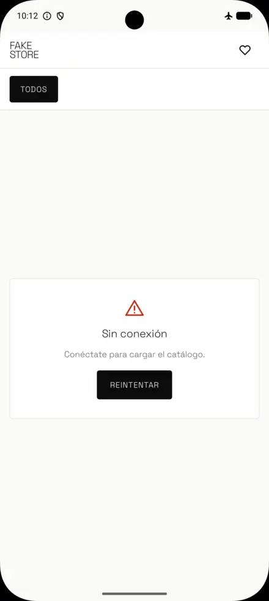
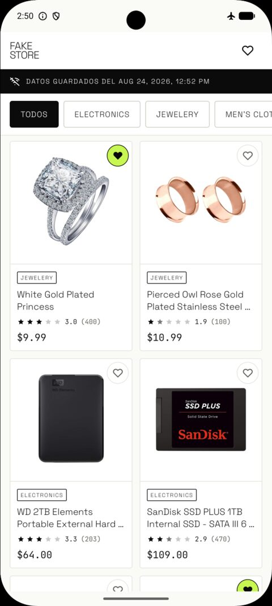
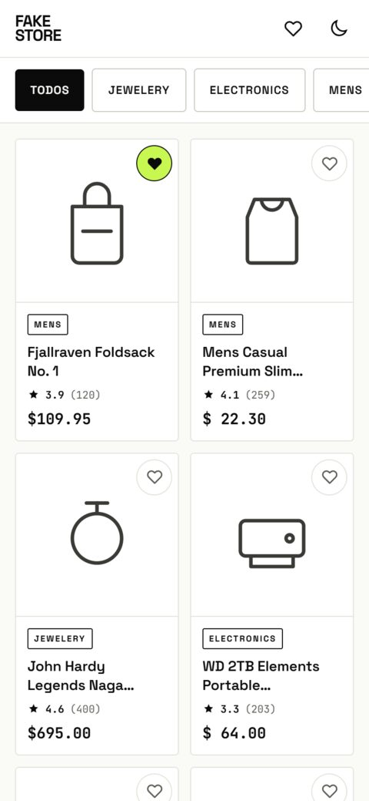
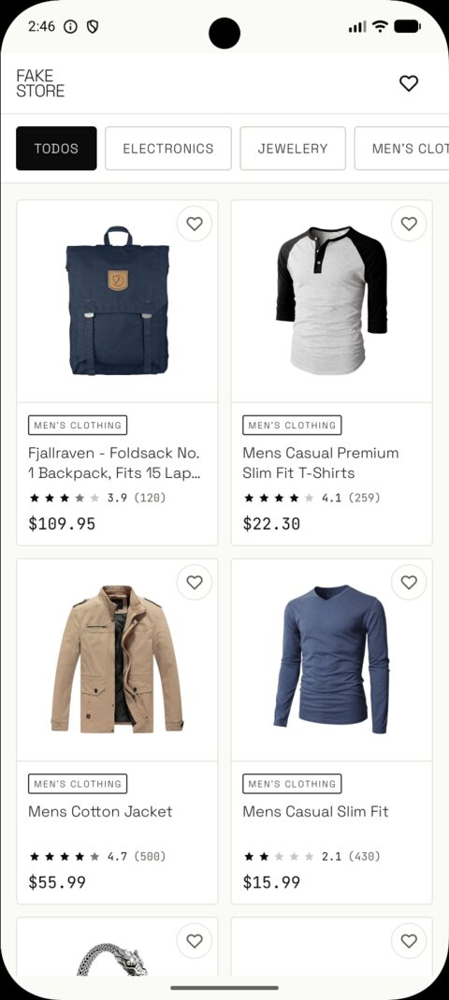
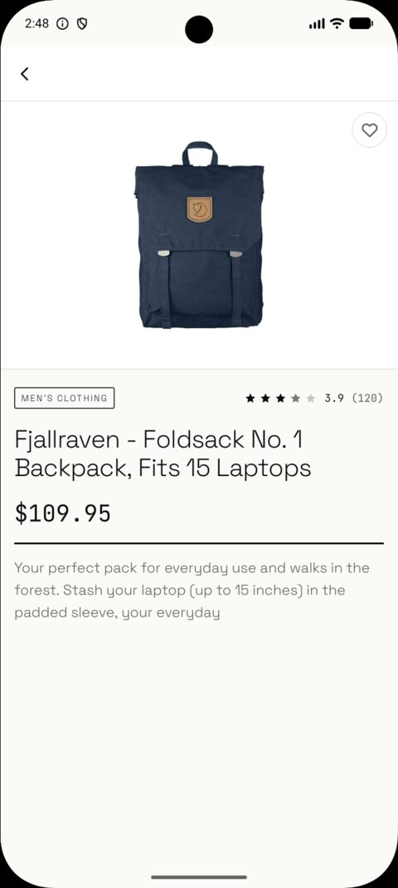
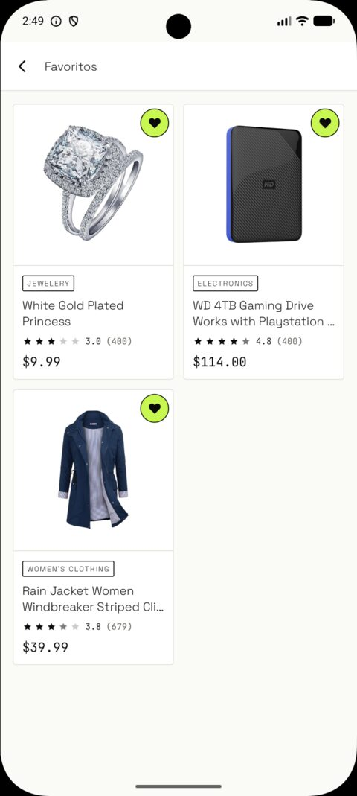

La arquitectura de esta app no está escrita en un documento.
Está escrita en el build.
Quien evalúa debería poder distinguir lo que quedó fuera de tiempo de lo que quedó fuera de pensamiento.
El módulo de dominio del catálogo no tiene Retrofit ni Room en su classpath.
No es que esté mal visto importarlos: no compila.
¿Imposible? No: se arregla agregando la dependencia al build. Lo que no se puede es cometer la violación desde el código — hay que abrir un archivo de nueve líneas, que se toca dos veces al año, donde el diff dice textual que estás metiendo HTTP en el dominio.
No es una pared infranqueable. Es una pared que no cruzás distraído, y que deja marca cuando la cruzás.
import retrofit2.Retrofit
import android.content.Context

Sin caché y sin red, la pantalla de error es lo correcto: no hay nada que mostrar.
Con caché, el contenido se queda. Aparece una banda con la antigüedad de los datos, y un aviso que no bloquea nada.
Un fallo de red nunca debe tapar datos que el usuario ya tenía.
Y cuando vuelve la conexión, la app reintenta sola: la banda se cierra sin que nadie toque Reintentar.



Trece láminas dibujadas antes del primer componente de código.
Atomic design se inventó para la web, donde una página es un archivo. En Android hay módulos, ViewModels y navegación, así que sus cinco capas hubo que traducirlas, no copiarlas.
El corte que importa está entre el organismo y la plantilla: todo lo que está por encima se puede previsualizar sin lanzar la app.
Durante dos bloques enteros, esta app tuvo un corazón dibujado que no hacía absolutamente nada. Fue a propósito: simularlo con estado en memoria habría hecho parecer cumplido justo el requisito que pide persistir entre reinicios.
Cuando llegó el contexto completo —dominio, datos y su propia pantalla— el catálogo y el detalle no se tocaron. Se agregó una línea en el ViewModel que cruza los dos flujos.
Y ahora demos vuelta el argumento. Si mañana el negocio decide que favoritos no va, se borran tres módulos y sus tres aristas, y el dominio del catálogo ni se entera.
Una decisión sin costo declarado es una decisión que no se pensó.
{ "screenId": "product_list", "contractVersion": 1,
"root": { "type": "lazy_list", "id": "list", "source": "catalog",
"itemTemplate": { "type": "product_card", "id": "card",
"image": "{product.image}", "title": "{product.title}",
"price": "{product.price}",
"trailing": { "type": "favorite_toggle",
"productId": "{product.id}" } } } }
El servidor decide cómo se ve la pantalla y la app la dibuja. El valor de negocio es directo: cambiar el orden de una pantalla, o lanzar una campaña, sin pasar por una publicación en la tienda.
Hecho de la forma habitual choca de frente con el offline-first: el servidor manda la pantalla ya rellena, y eso obliga a cachear pantallas renderizadas — justo lo que rompe la fuente única de verdad.
El payload no dice el título del producto. Dice «acá va el título del producto».
Layout cacheado más datos cacheados significa que la app puede renderizar una pantalla dirigida por el servidor estando en modo avión.
El alcance quedó por encima del mínimo, y fue deliberado. La app que cumple los cuatro requisitos se sostiene sola; todo el resto existe para mostrar cómo pienso un producto que tiene que crecer.
Decisión por decisión, con su fecha y su costo.
Gracias.

